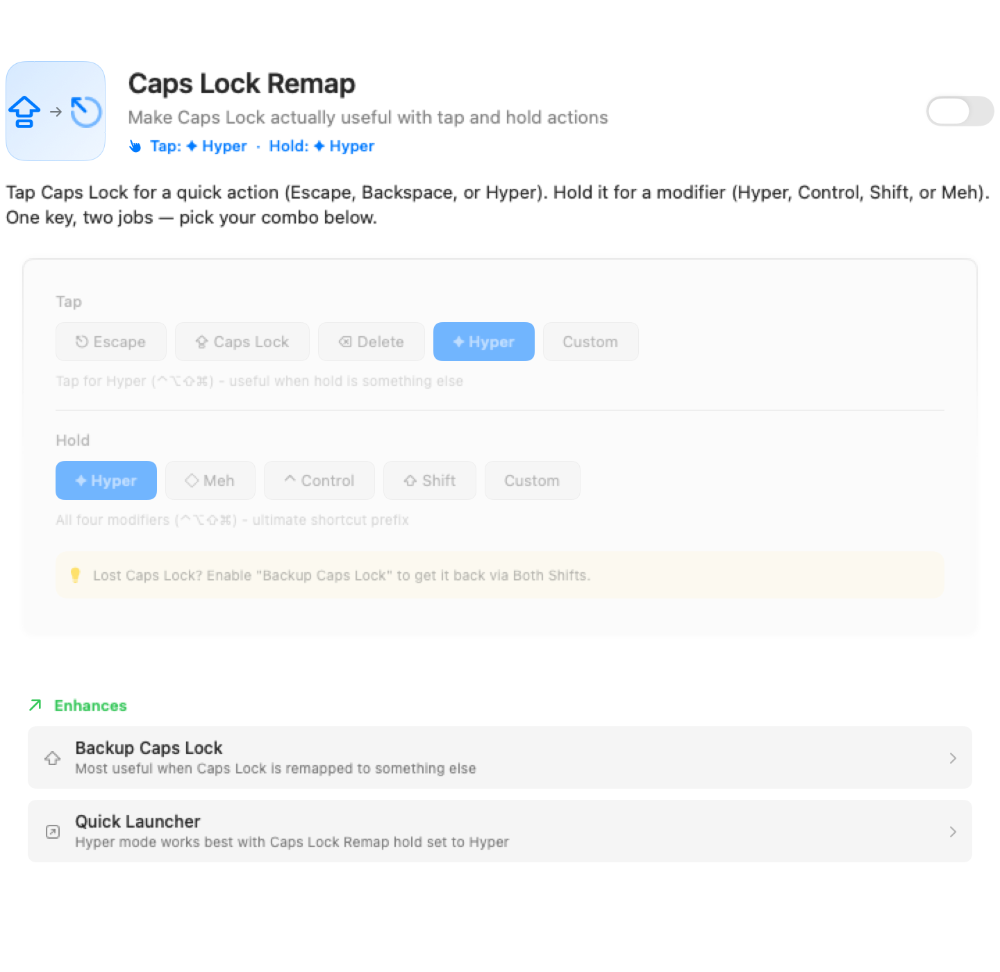
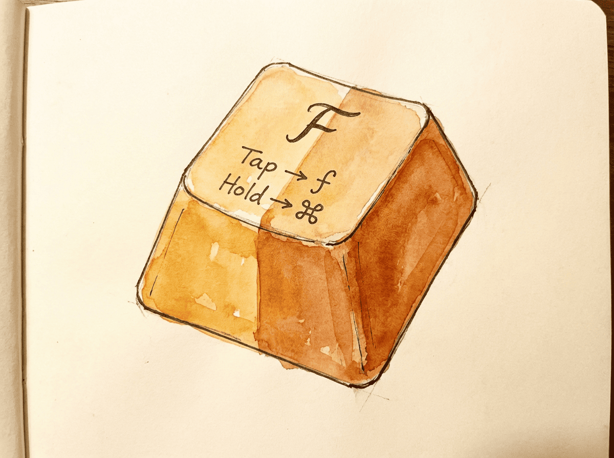
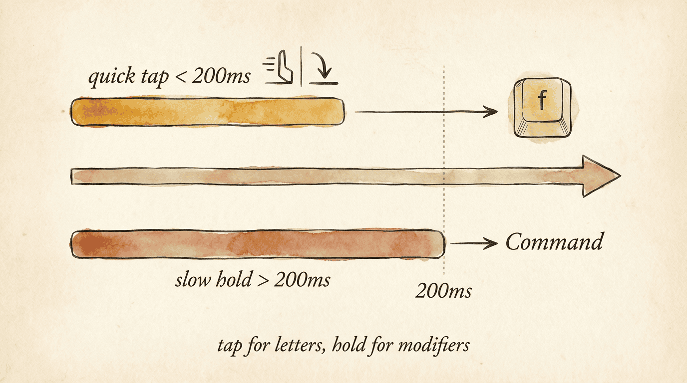
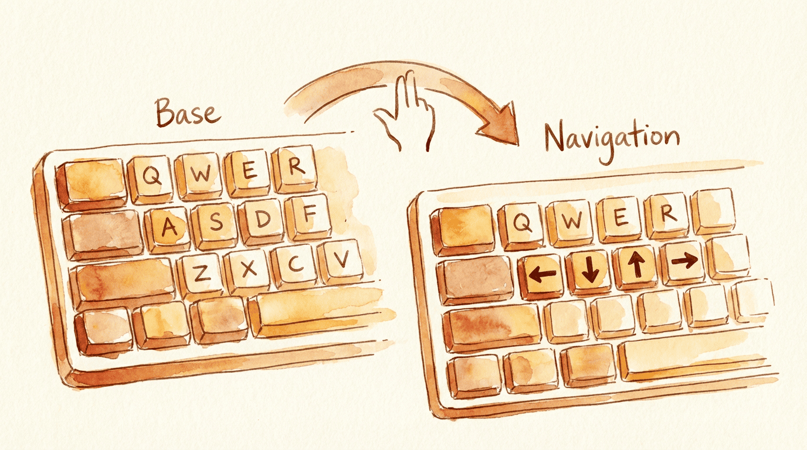
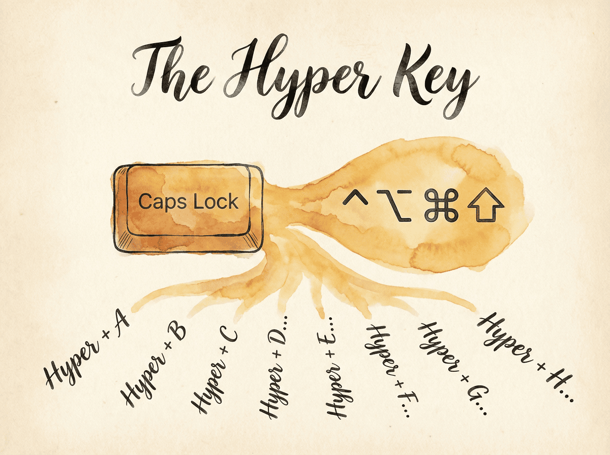
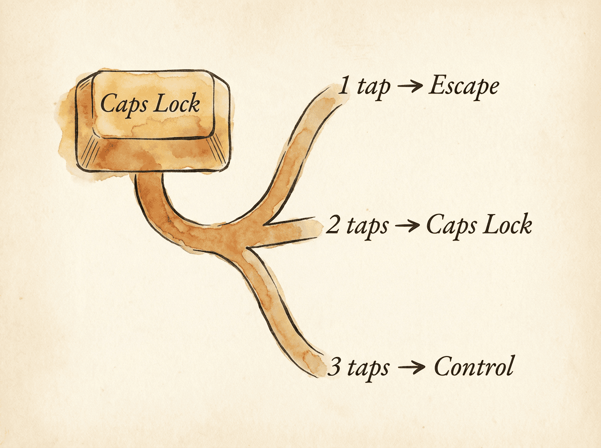
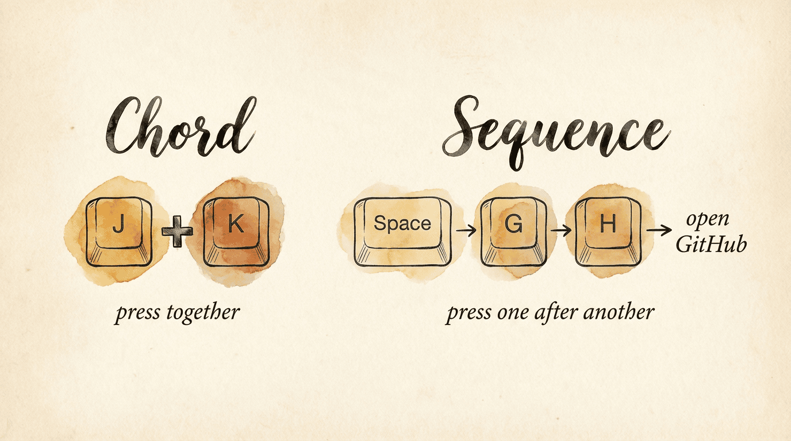

If you've never customized a keyboard beyond System Settings > Keyboard > Modifier Keys, this page is for you. We'll start with the simplest possible change and build up to more powerful ideas.
Look at your keyboard. Caps Lock sits in prime real estate — right next to the home row, easy to reach with your pinky. But when was the last time you actually wanted Caps Lock?
Now look at Escape. It's way up in the corner, a full stretch from the home row. But you press it constantly — dismissing dialogs, canceling searches, exiting full-screen video, leaving editing modes.
The fix: make Caps Lock send Escape instead.
Before: After:
┌──────┐ ┌──────┐
│ Caps │ (useless) │ Esc │ (useful!)
│ Lock │ │ │
└──────┘ └──────┘
┌──────┐ ┌──────┐
│ Esc │ (far away) │ Esc │ (still there)
└──────┘ └──────┘This is a remap — making one key behave as another. It's the simplest thing you can do, and it takes about ten seconds in KeyPath.

That's it. One key remapped. No config files, no JSON, no terminal commands. But this is just the beginning — once you see how easy it is, you'll want to do more.
That Caps Lock remap is nice, but now you've lost Caps Lock entirely. What if the key could be both — Escape when you tap it, and something more useful (like Control) when you hold it?
This is called tap-hold: one key, two jobs depending on how you press it.
┌──────────┐
│ Caps Lock│
│ │
│ tap: Esc │ Press and release quickly → Escape
│hold: Ctrl│ Hold down + press another key → Control
└──────────┘
Now you get Escape and a conveniently placed Control — from one key. No sacrifices.
The tricky part is timing — how does KeyPath know if you meant to tap or hold? It watches for a threshold (default: 200ms) and what other keys you press during the decision window. You can tune this to match your typing speed.

See the One Key, Multiple Actions guide for all the options.
You just saw one key doing two things. What if you could do that with every key? That's what layers are.
Think of layers like having multiple keyboards stacked on top of each other. You're always typing on one layer, and you can switch between them.

You already use layers on your Mac — holding Shift gives you a different "layer" of characters (uppercase letters, symbols like ! @ # $). Keyboard remapping just lets you create as many layers as you want.
For example, a navigation layer puts arrow keys right on the home row — no more reaching for those tiny arrow keys on your MacBook:
Base layer (normal typing): Navigation layer (hold trigger):
┌───┬───┬───┬───┐ ┌───┬───┬───┬───┐
│ H │ J │ K │ L │ │ ← │ ↓ │ ↑ │ → │
└───┴───┴───┴───┘ └───┴───┴───┴───┘
Hold a trigger key to enter the nav layer,
release to go back to normal typing.Common layers:
You use these modifiers every day on your Mac:
| macOS name | Symbol | What it does |
|---|---|---|
| Command | ⌘ | The primary modifier — ⌘C to copy, ⌘V to paste |
| Option | ⌥ | Secondary modifier — special characters, alternate actions |
| Control | ⌃ | Used in Terminal, Emacs-style shortcuts |
| Shift | ⇧ | Uppercase letters, alternate toolbar actions |
The problem: they're all in the corners. Every shortcut forces your fingers off the home row. Over a workday, that's thousands of small reaches.
Home row mods fix this using the same tap-hold idea — your home row letter keys double as modifiers when held:
┌─────┐ ┌─────┐ ┌─────┐ ┌─────┐ ┌─────┐ ┌─────┐ ┌─────┐ ┌─────┐
│ A │ │ S │ │ D │ │ F │ │ J │ │ K │ │ L │ │ ; │
│ ⇧ │ │ ⌃ │ │ ⌥ │ │ ⌘ │ │ ⌘ │ │ ⌥ │ │ ⌃ │ │ ⇧ │
└─────┘ └─────┘ └─────┘ └─────┘ └─────┘ └─────┘ └─────┘ └─────┘
Tap for letters, hold for modifiers
Hold F + press C = ⌘C (Copy). Hold A + press Tab = ⇧Tab. Your hands never move.
The challenge is avoiding misfires during fast typing. KeyPath uses opposite-hand activation (same-hand = letter, cross-hand = modifier), fast typing protection, and per-finger timing to make it reliable. Read the full Shortcuts Without Reaching guide for details.
Every modifier combination you try is already taken by some app. The solution: create a modifier that no app uses.
Apps rarely use all four modifiers together, so Hyper creates dozens of clean shortcuts that are unlikely to conflict. Caps Lock Remap provides Hyper by default when you hold Caps Lock — now every letter key can become its own shortcut.

Tap-dance takes the dual-role idea further: different actions based on how many times you tap.
Caps Lock:
1 tap → Escape
2 taps → Caps Lock (when you actually need it)
3 taps → Control
This is great for keys you rarely use — pack multiple functions into one key without adding complexity to everyday typing.
Beyond single keys, you can trigger actions from combinations:

These let you create memorable shortcuts without running out of modifier combinations.
Your Leader key is the starting key for KeyPath layers and sequences. It is Space by default. Hyper is a shortcut modifier made from Control, Option, Command, and Shift together. Apps rarely use all four at once, which makes Hyper shortcuts unlikely to conflict. Caps Lock Remap provides Hyper by default.
Use Leader when you want a path such as Leader → W → L. Use Hyper when you want a modifier shortcut such as Hyper + S. Some rules, including Quick Launcher, let you choose either style.
Here's how all these concepts build on each other:
Simple remap One key does two things
(Caps Lock → Esc) → (tap: Esc, hold: Ctrl)
│ │
↓ ↓
A whole second Modifiers on the
keyboard (layers) → home row (HRM)
│ │
↓ ↓
Conflict-free Multiple taps,
shortcuts (Hyper) chords, sequencesStart with a simple remap. Get comfortable. Then add the next idea when you're ready. There's no rush.
These community resources go deeper into keyboard customization concepts: